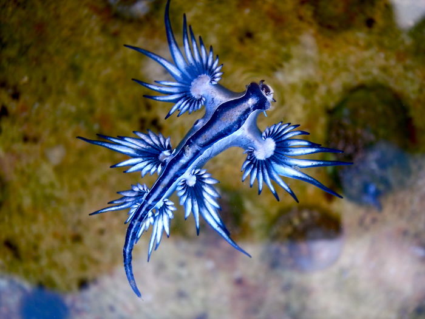
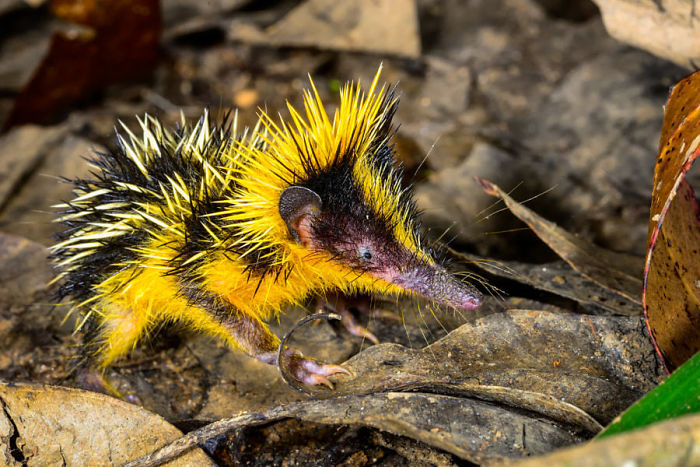
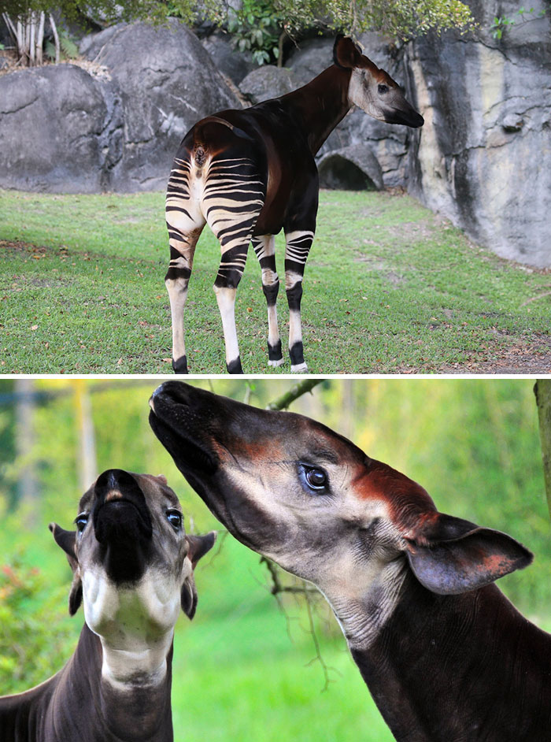

Panda Ant
Despite looking like an ant and being referred as such, it is in fact a form of wingless wasp. This insect is also known as cow-killer. Females possess thicker fur but lack wings. The furry panda ant lives for about 2 years.




Okapi
This mammal is native to the Democratic Republic of the Congo in Central Africa. Despite the zebra-like stripes, it is actually more closely related to giraffes. Okapi's coat is a chocolate to reddish brown, much in contrast with the white horizontal stripes and rings on the legs and white ankles.
Note: These are all one of the locations where these species are located